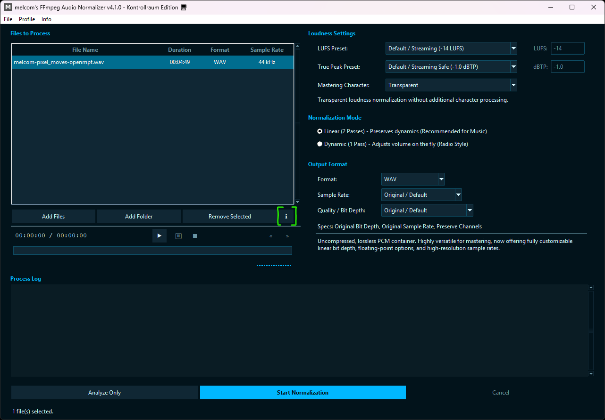
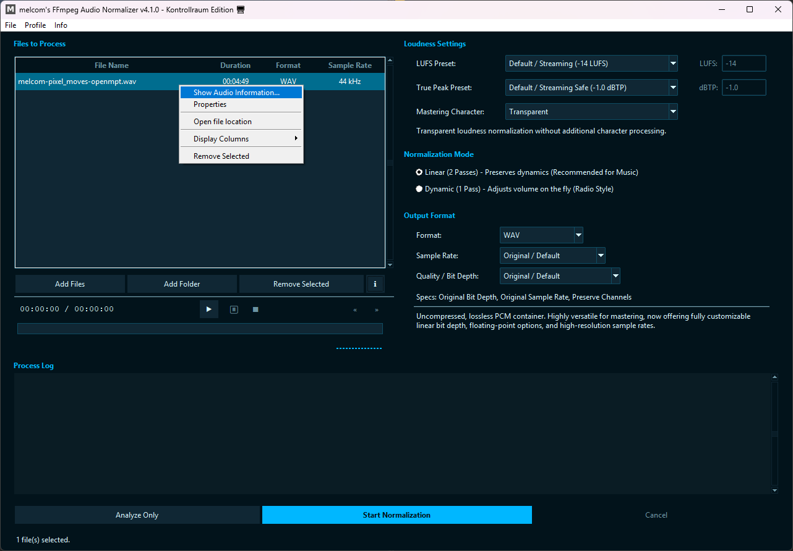
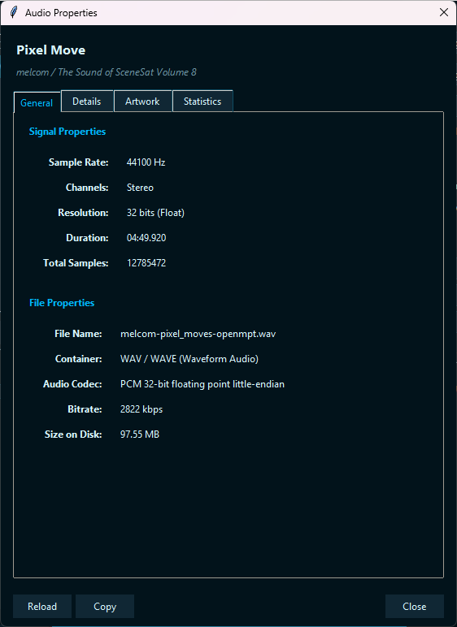
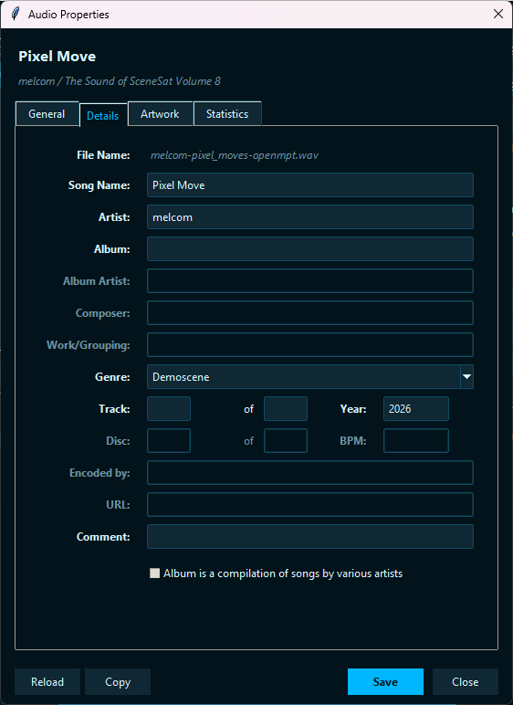
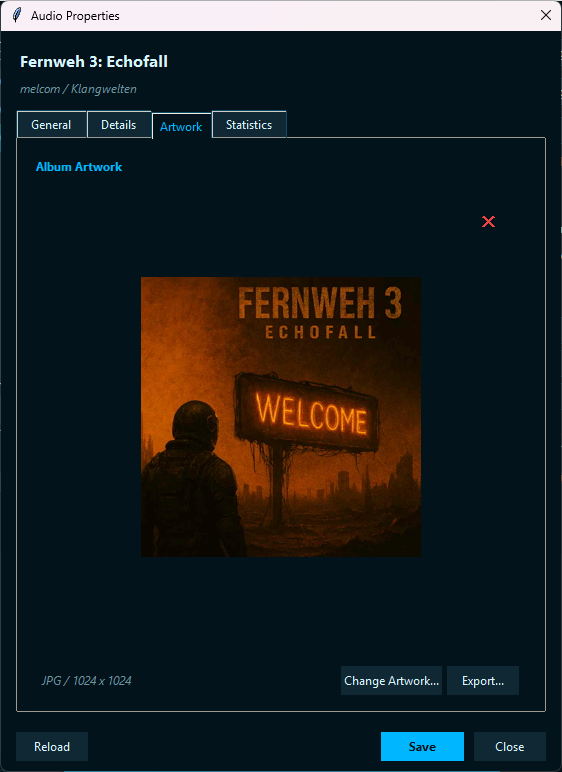
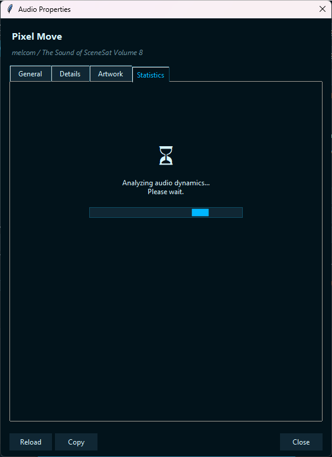
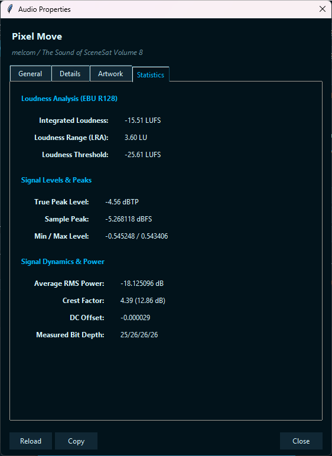

melcom's FFmpeg Audio Normalizer
Open-Source Audio-Normalisierung mit FFmpeg, LUFS und True Peak Support. Entwickelt für Musik, Podcasts, Gaming-Audio und Batch-Workflows - ohne Kommandozeile.
Voraussetzungen
Für die Nutzung von melcom's FFmpeg Audio Normalizer wird die vollständige FFmpeg-Suite benötigt:
ffmpeg.exe - Audioanalyse, Normalisierung und Metadaten-Schreibenffplay.exe - Audio-Vorschau und Player-Funktionffprobe.exe - Analyse technischer Audioinformationen und Kanalerkennung
Nach dem Entpacken muss der Pfad zum FFmpeg-Ordner in den Optionen des Programms hinterlegt werden.
Erste Schritte
- Starte
AudioNormalizer.exe.
- Öffne:
Datei -> Optionen
- Wähle den Ordner aus, der:
ffmpeg.exe, ffplay.exe und ffprobe.exe enthält.
- Nutze "Dateien hinzufügen", "Ordner hinzufügen" oder ziehe deine Dateien per **Drag & Drop** direkt in die Warteschlange.
- Wähle dein gewünschtes LUFS-Preset, True-Peak-Limit und Ausgabeformat.
- Wähle einen Audio-Charakter aus. Transparent ist der Standard und verändert den Klangcharakter nicht zusätzlich.
- Klicke auf:
"Normalisierung starten"
Während der Verarbeitung zeigt das Log-Fenster alle Schritte sowie den aktuellen Fortschritt an.
Normalisierungs-Modi & Export-Optionen
Linear (2 Durchgänge)
Empfohlen für Musik, hochwertige Masters und Archivierung. Die Datei wird zuerst analysiert und anschließend mit einer festen Verstärkung verarbeitet. Dadurch bleibt die Dynamik des Originals bestmöglich erhalten.
Dynamisch (1 Durchgang)
Empfohlen für Sprache, Podcasts, Streams und Broadcast-Audio. Lautstärkeunterschiede innerhalb der Datei werden während der Verarbeitung aktiv ausgeglichen.
Erweiterte Export-Optionen & Echtzeit-Specs
Die Kontrollraum Edition bietet eine umfassende Kontrolle über das Zielformat:
- Sampleraten-Wahl: Stelle deine Zieldatei flexibel von "Original / Default" bis zu
192000 Hz (192 kHz).
- Qualität & Bittiefe:
- WAV: Erlaubt die Wahl zwischen 64-Bit / 32-Bit Floating Point, linearen 32-Bit / 24-Bit / 16-Bit Integer sowie 8-Bit Unsigned.
- FLAC: Bietet verlustfreie Auflösungen in 24-Bit und 16-Bit.
- MP3 & M4A (CBR/VBR): Wähle zwischen konstanten Bitraten (bis zu 320 kbps) oder hocheffizienten variablen Kompressionsstufen (z. B. V0, V2 bei MP3).
- OGG: Unterstützt variable Qualitätsstufen (q4 bis q10) sowie konstante 320 kbps.
- Echtzeit-Specs & Auto-Reset: Eine dynamische
Specs:-Zeile zeigt die genaue Konfiguration live an. Bei jedem Wechsel des Audio-Containers werden die Dropdowns automatisch auf "Original / Default" zurückgesetzt, um Kompatibilitätskonflikte zu verhindern.
Wiedergabesteuerung & Queue
Der integrierte Player und die Dateiliste wurden für ein optimales Workflow-Gefühl optimiert:
- Windows-Prozess-Freeze (0% CPU): Drückst du auf Pause (⏸), wird der FFplay-Prozess im System komplett schlafen gelegt (über
NtSuspendProcess) und verbraucht im pausierten Zustand exakt 0 % CPU-Leistung.
- Klick-interaktives Spulen: Klicke direkt auf die Player-Fortschrittsleiste, um präzise zu dieser Stelle im Song zu springen. Die Sekundenanzeige aktualisiert sich ab Sekunde 0 flüssig und ohne Verzögerung.
- Asynchrone Treeview-Spalten: Die Spalten Dauer, Format und Samplerate werden im Hintergrund geladen – ohne jegliches Ruckeln oder Einfrieren des Programms.
- Spalten-Wähler & Windows-Features: Per Rechtsklick auf die Spaltenköpfe oder im Kontextmenü können Spalten ein- oder ausgeblendet werden. Ein Rechtsklick auf eine Datei erlaubt zudem das direkte Öffnen des Dateipfads im Explorer sowie den Aufruf des echten Windows-Eigenschaften-Fensters.
Audioeigenschaften
Mit dem integrierten Audioeigenschaften kannst du detaillierte Informationen zu deinen Audiodateien einsehen, Metadaten (ID3-Tags) bearbeiten, Cover-Artworks verwalten und umfassende Loudness-Statistiken abrufen.
So öffnest du die Audioeigenschaften:
Wähle eine Datei in der Liste aus und klicke auf den [ i ]-Button, oder mache einfach einen Rechtsklick auf die gewünschte Datei.


Umfangreiche Tabs im Überblick:
- Allgemein (General): Zeigt Container, Codec, Samplerate, Kanäle, Spieldauer und die nominale Bitrate an. Bei verlustbehafteten Formaten (MP3, OGG, M4A) wird die Bittiefe akademisch korrekt als
N/A maskiert.
- Details (Tag-Editor): Bearbeite Songtitel, Künstler, Album, Jahr, Genre und vieles mehr. Formate wie WAV und raw AAC werden gemäß ihrer technischen Standards geschützt (WAV unterstützt nur Basis-Metadaten, raw AAC gar keine), während M4A nun vollumfängliches Tagging erlaubt.
- Cover (Artwork): Extrahiert und zeigt Cover-Bilder für MP3, FLAC und M4A. Erlaubt den verlustfreien Import neuer Bilder, den Export bestehender Artworks oder das rückstandsfreie Löschen des Covers.
- Statistiken (Statistics): Führt eine hochpräzise EBU R128-Analyse durch. Neben der integrierten Lautheit und dem True Peak werden Sample Peak, RMS-Leistung, Gleichstromversatz (DC-Offset), gemessene Bittiefe und der Crest-Faktor (Verhältnis von Peak zu RMS) ermittelt.
- Smart-Copy: Ein Klick auf "Kopieren" kopiert genau die Daten des aktuell geöffneten Tabs sauber formatiert in die Zwischenablage.
Einblicke in den Inspector:
Klicke auf die Bilder, um sie zu vergrößern.





Presets & Audio-Charakter
LUFS- und True-Peak-Presets
- Die App verwendet klare, moderne und leicht verständliche Bezeichnungen für alle Lautheitsprofile.
- Standard / Streaming sicher (-1.0 dBTP) eignet sich hervorragend für die meisten Plattformen.
- Lossy-Codec sicher (-2.0 dBTP) bietet zusätzlichen Headroom für MP3-, M4A- und OGG-Exporte.
- Kein Limit / riskant (0.0 dBTP) sollte nur verwendet werden, wenn das Zielformat dies ausdrücklich erlaubt.
Mastering-Charakter
Transparent
Reine Lautheitsnormalisierung ohne zusätzliche Klangfärbung.
Cohesive
Fügt leichte Kompression und subtilen Softclip hinzu, um den Mix geschlossener wirken zu lassen.
Punchy
Mehr Energie, mehr Präsenz und kräftigere Dynamikbearbeitung.
Aggressive
Die intensivste Variante für harte, dichte oder aggressive Produktionen.
Qualität & Metadaten
Erhalt der Audioqualität
Bei WAV- und FLAC-Dateien bleiben Samplerate und Bit-Tiefe standardmäßig erhalten. Es findet kein unnötiges Downsampling statt, es sei denn, eine feste Samplerate wurde explizit ausgewählt.
Metadaten & Tags
Titel, Album, Künstler, Jahr und weitere Metadaten werden automatisch übernommen.
MP3-Dateien verwenden automatisch den ID3v2.3-Standard für maximale Kompatibilität.
Profil-Verwaltung
Die Kontrollraum Edition verfügt über ein flexibles Profilsystem, mit dem Du Deine bevorzugten Einstellungen speichern, laden und verwalten kannst. Dies ist besonders praktisch, um schnell zwischen unterschiedlichen Workflows (z. B. Podcast-Normalisierung und Musik-Mastering) zu wechseln.
Funktionen im Überblick:
- Profil speichern (Save Profile...): Speichert alle aktuellen Einstellungen in einer JSON-Datei im Ordner
/profile/. Du kannst den Namen der Datei frei vergeben.
- Profil laden (Load Profile...): Lädt ein zuvor gespeichertes Profil aus dem
/profile/-Verzeichnis und aktualisiert die Benutzeroberfläche sofort.
- Auf Standard zurücksetzen (Reset to Defaults): Setzt alle Regler, Presets und Einstellungen sofort auf die sicheren Standardwerte zurück.
Das Profilsystem speichert die kompletten Lautheits-Vorgaben (LUFS, True Peak, Mastering-Charakter), den gewählten Normalisierungs-Modus sowie das Ausgabeformat (inklusive Samplerate und Qualitätsstufe) ab.
Zusätzliche Hinweise
Anti-Ruckel-Bremse: Die FFmpeg-Prozessverarbeitung liest Daten nun zeilenweise (readline()) statt zeichenweise aus. Das spart wertvolle CPU-Ressourcen und verhindert GUI-Hänger bei der Normalisierung gänzlich.
Robustheits-Guard: Das Programm verhindert proaktiv den Datei-Import, falls der hinterlegte FFmpeg-Pfad fehlt oder ungültig ist, um Fehler im Vorfeld auszuschließen.
Falls ein Prozess abgebrochen wird oder ein Fehler auftritt, entfernt das Programm automatisch alle temporären Arbeitsdateien (.temp).
Über diese Hilfe
Dieses Projekt wurde von melcom entwickelt und steht unter der MIT-Lizenz.
Projektseite:
melcom-creations.github.io/melcom-music